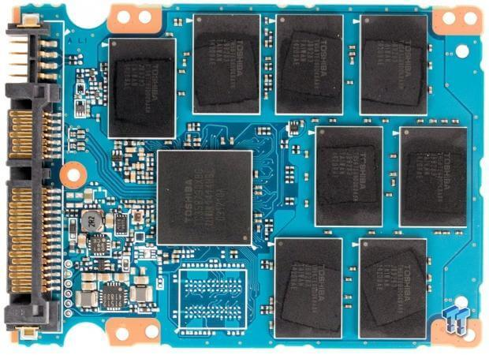

CPSC 203, 2025 W1
September 11, 2025
Setup instructions available.
Python resources posted to piazza.
First examlet signup available.
Suppose we can knit 1012 stitches per second…
| 10 | 100 | 1000 | 10,000 | 1012 | |
|---|---|---|---|---|---|
| \(n\) | 10-11s | 10-10 s | 10-9 s | 10-8 s | 1 s |
| \(n \log n\) | 10-11 s | 10-9 s | 10-8 s | 10-7 s | 40 s |
| \(n^2\) | 10-10 s | 10-8 s | 10-6 s | 10-4 s | 1012 s |
| \(n^3\) | 10-9 s | 10-6 s | 10-3 s | 1 s | 1024 s |
| \(2^n\) | 10-9 s | 1018 s | 10289 s |
The amount of computation we do inside our algorithm actually matters!
What’s your favorite color? Do you have a sense for why it’s your favorite? Does that color influence your dress/decor/purchases?
Psychological: https://www.buzzfeed.com/mermaidbarbie/which-color-truly-matches-your-personality-24h9koy69s
Cultural: https://en.wikipedia.org/wiki/Color_symbolism
Activity—In pairs, choose a color (primary or secondary) and find something in its cultural symbolism that surprises you. Contradictions are especially interesting. Report your findings to the class (briefly).
05:00

First, some general questions…
What does data look like to a computer?
Is that enough?
Can we use bits to represent integers?
| 3 | 1 | 5 | 7 |
| 103 | 102 | 101 | 100 |
| 103 | 102 | 101 | 100 |
| 23 | 22 | 21 | 20 |
What’s the highest number we can represent with 4 bits?
What’s the highest number we can represent with 5 bits?
How many bits do we need to express 120?
Can we use integers to represent colors?
One way: RGB (red, green, blue), where each “component” is in range 0 through 255.
ex. (255, 0, 127) ==
Fun calculator for color values: https://colorizer.org
How many bits for 256 values? 4 5 6 7 8 9 10
What color is
0 1 0 1 1 0 1 1 0 1 0 1 1 0 1 1 0 1 0 1 1 0 1 1
Easier to read if we use hexadecimal representation:
Each component is represented by 2 hex digits 0123456789abcdef
ex. #674ea7
What do you observe about the following RGB colors?
| Red | Green | Blue |
|---|---|---|
| 255 | 0 | 0 |
| 17 | 0 | 178 |
| 45 | 0 | 13 |
| 200 | 0 | 220 |
| 62 | 0 | 37 |
| 130 | 0 | 95 |
Make the poppies pop!
Examine each pixel. If its red color channel is high (over 200, say), then leave it as is. Otherwise, change the pixel to grey by setting all 3 color channels to the average of their original values.